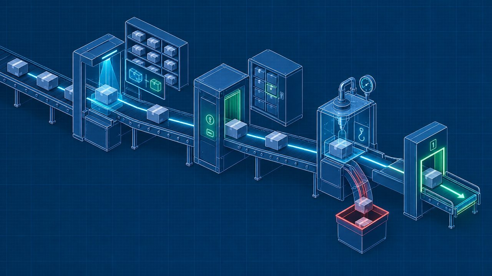

Security tooling
squatwatch

An offline detector for typosquats, dependency-confusion exposure and risky install hooks in npm and PyPI dependencies. Every finding names the technique and the popular package it resembles, and results come with CI-friendly exit codes.
- Checks names against about 12,000 popular PyPI projects and 14,000 npm packages
- Outputs text, JSON or SARIF 2.1.0 for CI
- Static review of setup.py, npm lifecycle scripts and wheel .pth files without executing them